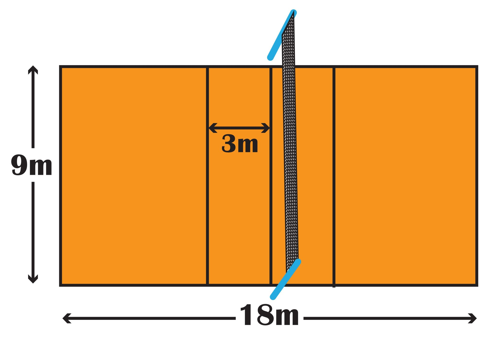
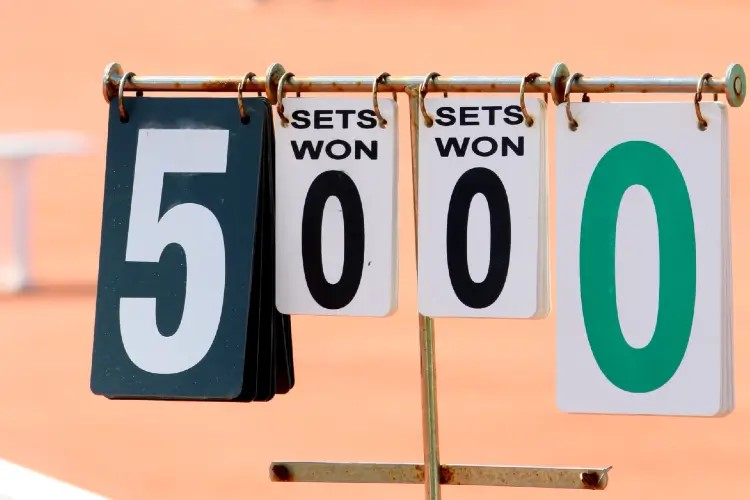

Je m'appelle Haida Sacko et je veux vous présenter le volley et ses règles
Le volley est un sport d'équipe qui se joue généralement à 6 contre 6
Un terrain standard mesure 18 mètre sur 9 mètre et est séparé en 2 par un filet.

Le but est de ne pas laisser la balle touche le sol dans son camp et la faire tomber dans le camp adverse.
Pour jouer, il existe plusieurs règles:
Pour gagner, il faut gagner 3 sets de 25 points chacuns (ou 15 points si c'est le 5ème set du match).

Cliquez sur le site officiel de la fédération française de volley-ball pour plus d'informations !